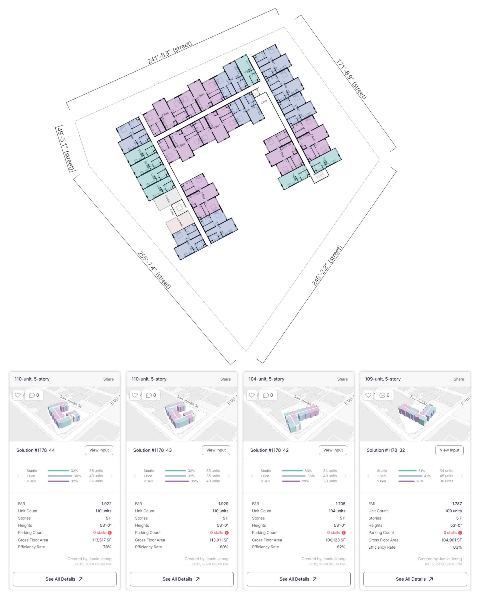
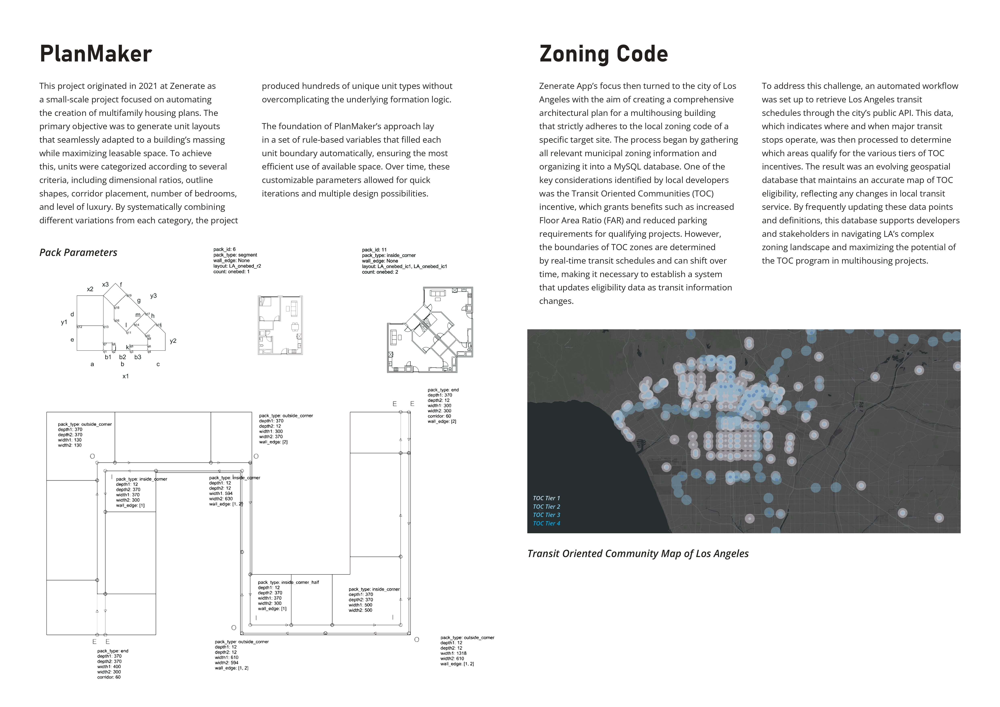
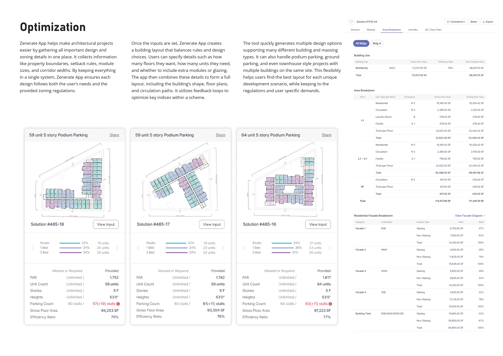
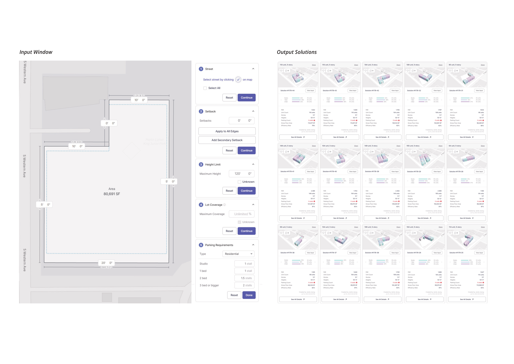
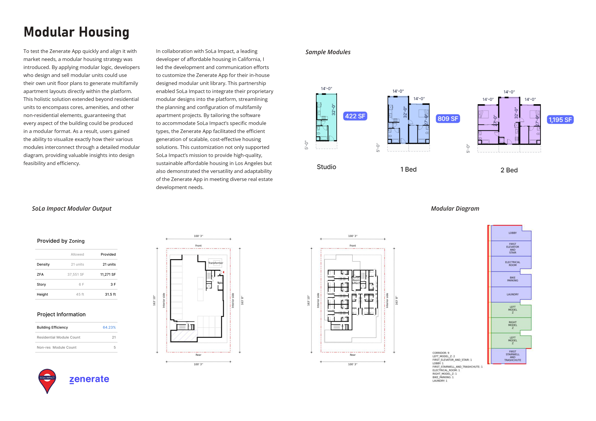

The Zenerate App is a cloud-based, automated feasibility study tool for multifamily modular housing development. For a given site, the app generates multiple building layouts that optimize floor area, density, and unit mix within zoning limits such as floor area ratio and height, building codes, and the user's design preferences.
The role covered the backend and the core algorithms: floor plan generation, database design and management, code maintenance, and service business logic, with hands-on development alongside leading a team of four to five. The stack was Python, Node.js, MySQL, QGIS, and git.

The work began in 2021 as PlanMaker, which filled each unit boundary using rule-based parameters. For Los Angeles, zoning data was organized in a MySQL database, and an automated workflow pulled transit schedules from the city's public API to keep the map of Transit Oriented Communities eligibility current. Other features covered podium and ground parking, multiple buildings on one site, and a modular unit library.



